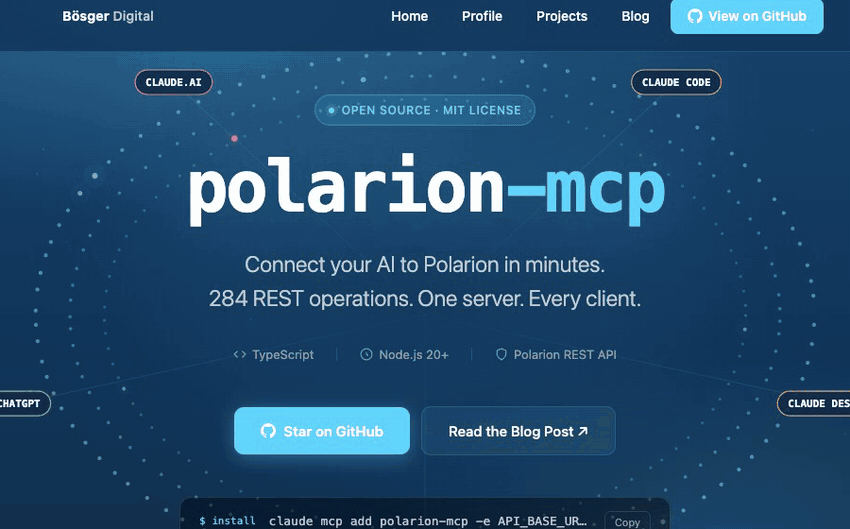

Work with Polarion data
284 tools generated from the REST API cover work items, documents, test management, plans, projects, and more.
Browse the tool catalog →Open source · MIT · Built for Polarion
Connect your AI assistant to Polarion ALM.
An open-source Model Context Protocol server with 284 tools generated from the Polarion REST API.
Choose a setup guide. “Unverified” entries need confirmation against current vendor documentation; this list does not certify every client integration.
Open the client picker above for your setup guide. For local setup, you need Node.js 22+, a Polarion REST API URL, and a personal access token (PAT).
Local clients launch npx -y polarion-mcp. Set API_BASE_URL to https://YOUR-POLARION/polarion/rest/v1 and BEARER_TOKEN to your PAT in the client's configuration.
Confirm that the client lists Polarion tools, then ask: “List the Polarion projects I can access.”
Already have a team MCP URL? Use it in your client guide. Cloud clients need a deployed server. Hosting one? Read the deployment guide.
With Git and Node.js 22+, build the server:
git clone https://github.com/phillipboesger/polarion-mcp.git
cd polarion-mcp
npm ci --ignore-scripts
npm run buildIn your client's local configuration, use command node and argument /absolute/path/to/polarion-mcp/build/index.js instead of npx -y polarion-mcp. Keep the same environment variables. See the configuration example.

What you can do
284 tools generated from the REST API cover work items, documents, test management, plans, projects, and more.
Browse the tool catalog →Named toolsets, allowlists, and read-only mode narrow the callable surface. The enabled list depends on your configuration.
Configure tools →Mutating REST tools support dry-run request previews. Selected Work Item changes also have validation guards for enumeration values, custom-field keys, and user references.
Explore features →Supported HTML response values include a Markdown representation alongside the original content.
Read the usage guide →Connect locally over stdio or remotely over Streamable HTTP. A separate REST wrapper serves OpenAPI Actions. The tool count covers generated REST tools; optional helpers and filters change the enabled list.
For teams and administrators
Polarion controls each user's permissions. Remote MCP accepts a user's PAT directly or through the server's OAuth login. The REST wrapper uses the deployment's Polarion credentials and a separate API key.
Plan TLS and reverse proxies, redirect allowlists, token lifetimes, rate limits, and tool restrictions. Extension interfaces support custom policy, audit, authentication, and instance resolution integrations.
Release workflows generate CycloneDX SBOMs and GitHub build provenance, and sign tagged container images with cosign. Check the artifacts available for each release.
Documentation
Made in the open
Bug reports, documentation fixes, and focused pull requests are welcome.
Built by Phillip Bösger, building on the work of @Jonasdero.